<br>
## Examples of circuitboard modules made this session.
[All files are here.](./Electronics_examples)
Daniel and I worked on several examples of fablab circuitboards that attached to microcontroller modules
to demonstrate some of the basic input/output capabilities. We used Arduino 'nano' and 'micro' boards - $2 to $4 from Amazon or
Ali express. We could also have fabbed our own microcontroller boards. By making the boards simple, we were able to involve one
artist in fabbing and soldering boards. That was gratifying.
___
###Light sensor and single LED.
Phototransistor and LED on the same board. Too close to be a useful demo of a 'night light'
but fun anyway.
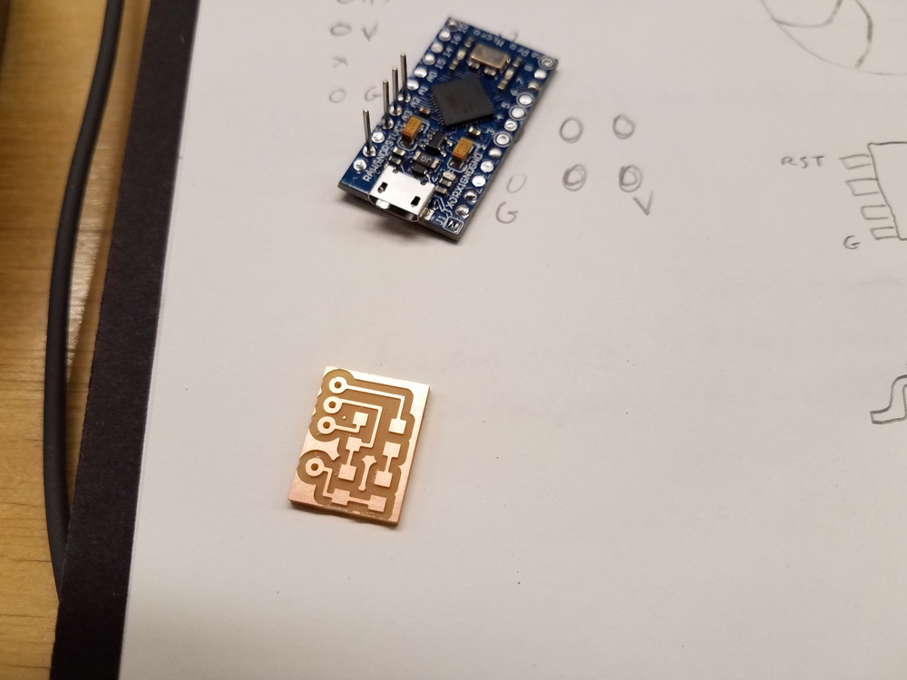
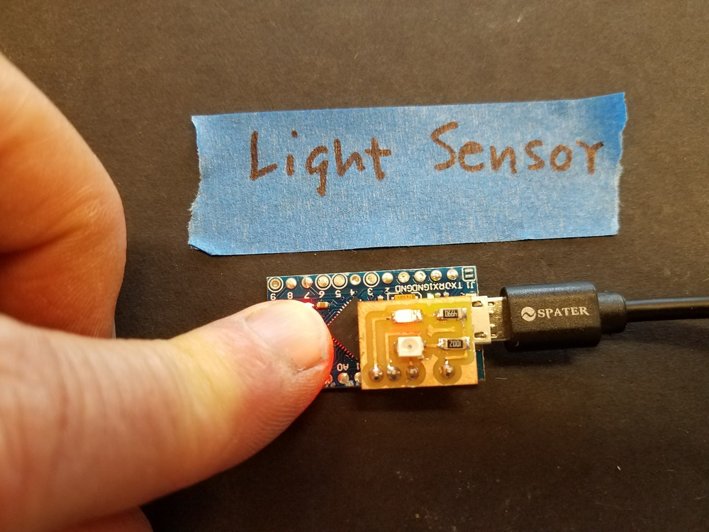
[Files here.](./Electronics_examples/Haystack_light_sensor)
<br>
###Microphone with RGB LED.
The beloved analog microphone! Circuitboard provides the standard filtered signal, plus a lowpass (~1 sec)
output, to allow differential measurement of signal amplitude. RGB LED can be programmed to respond to
sound level.
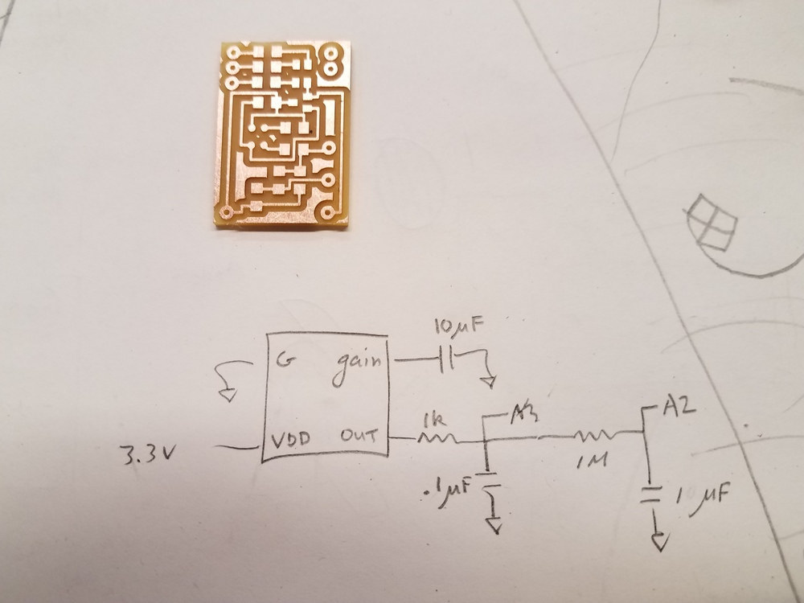
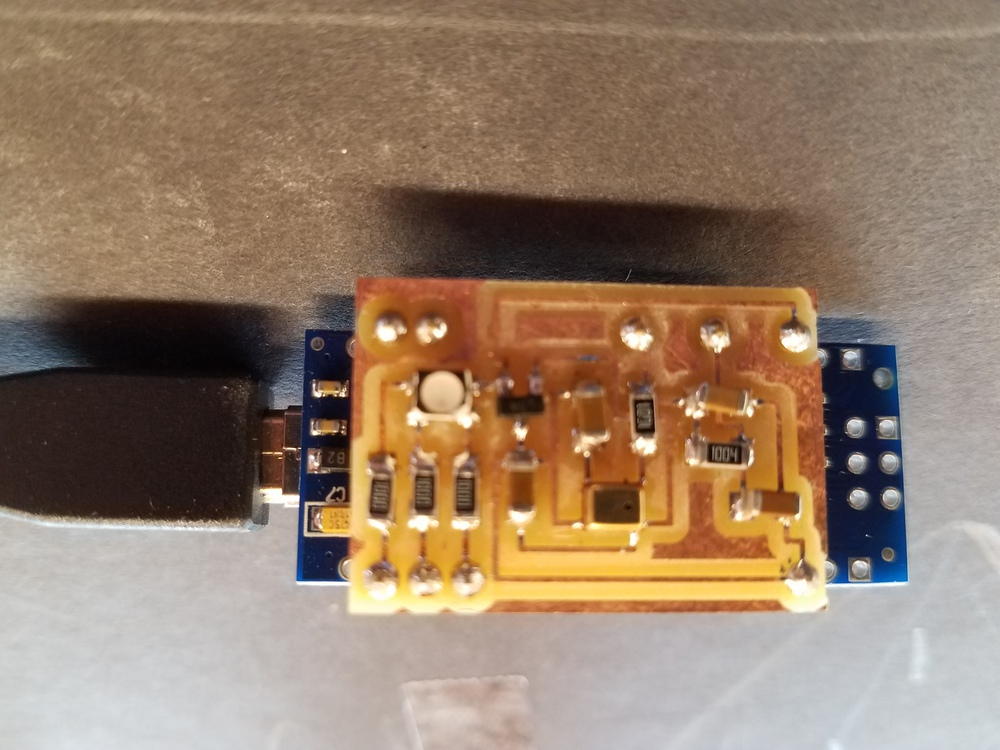
[Files](./Electronics_examples/Haystack_mic) here.
<br>
###Motor board with MOS FET.
Runs a motor in one direction. These FETS are good to 30V, but need diode protection against 'flyback' voltage spikes.
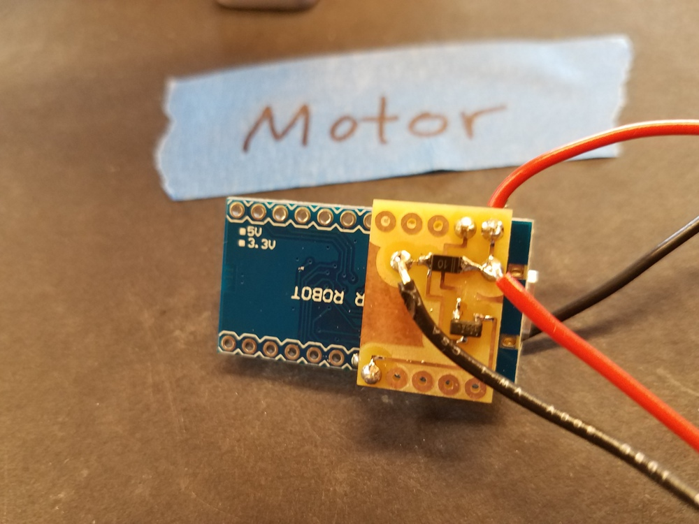
[Files](./Electronics_examples/Haystack_motor) here.
Here's a [movie. ](./Electronics_examples/Haystack_motor/motor.mp4)
<br>
###Six LED board.
Six LEDs attached to microcontroller pins. Blinky thing.
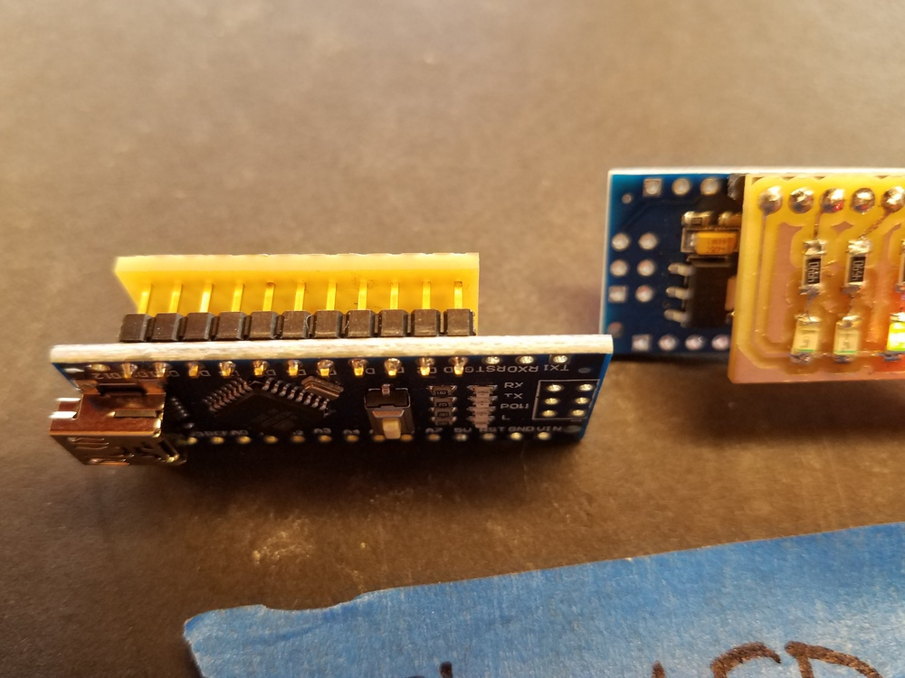
[Files here.](./Electronics_examples/Haystack_nano_six_LED)
[Here's a movie. ](./Electronics_examples/Haystack_nano_six_LED/6LED_blinking.mp4)
<br>
###Piezo disc as sensor or speaker.
Attached piezo disc to an analog input pin, with a 1MOhm resistor between the analog in and 3.3V to keep the DC average
at 3.3V. The piezo functions as a sensor or as a buzzer, depending on software-controlled function of pins.
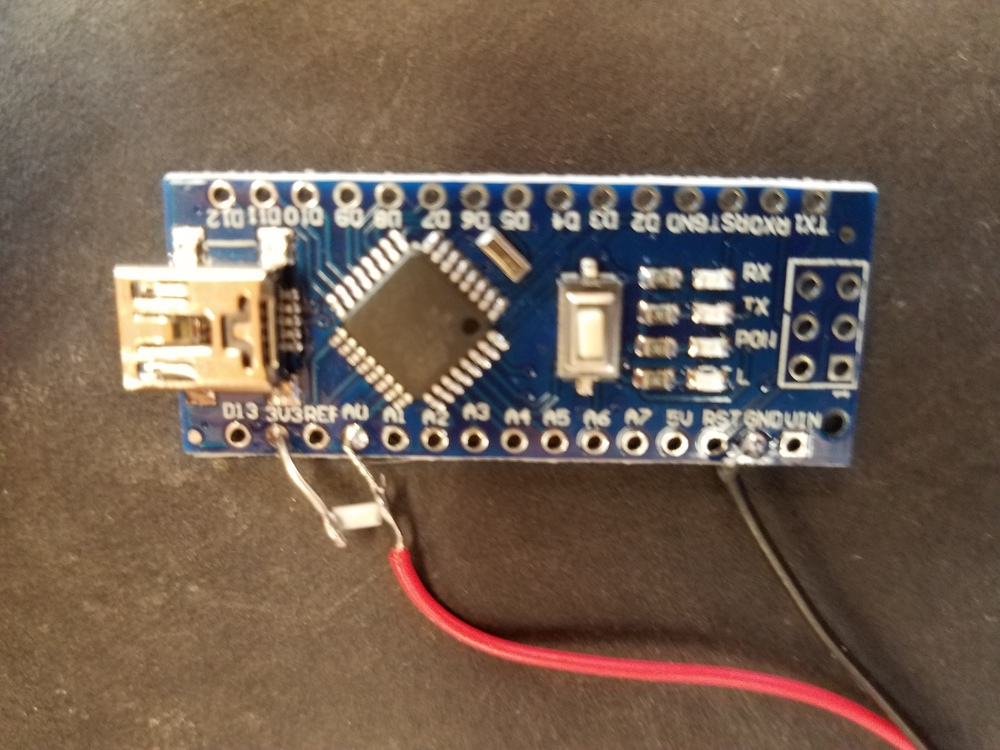
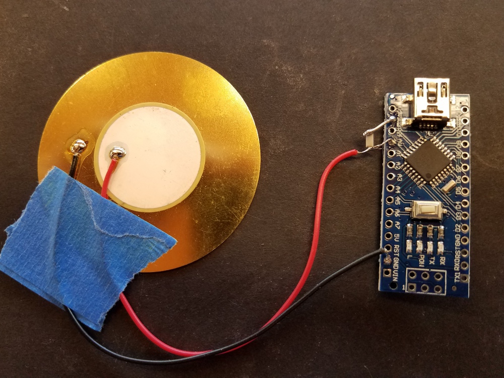
[Files](./Electronics_examples/Haystack_piezo) here.
###RGB LED (single RGB_LED board with wire leads, or two RGB_LEDs on one board.)
[Files](./Electronics_examples/Haystack_RGB) here for all RGB boards.
Below is a little board that can be attached where needed. Here we;ve attached to three of the PWM pins on the microcontroller.
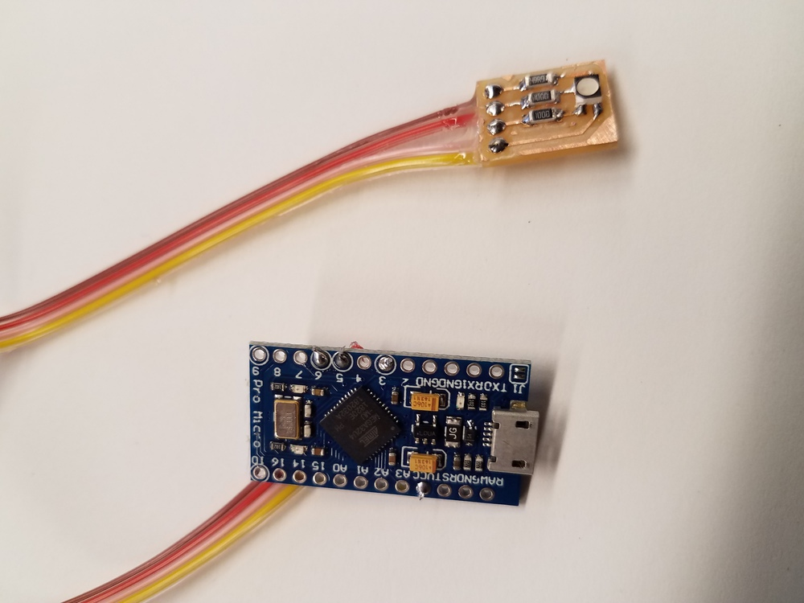
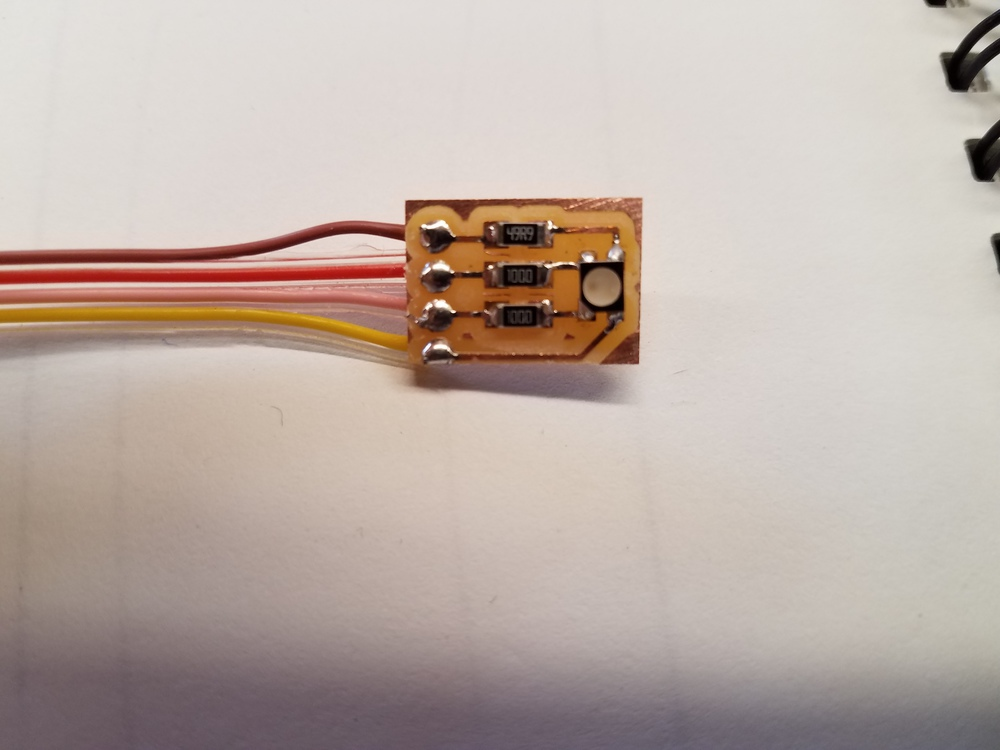
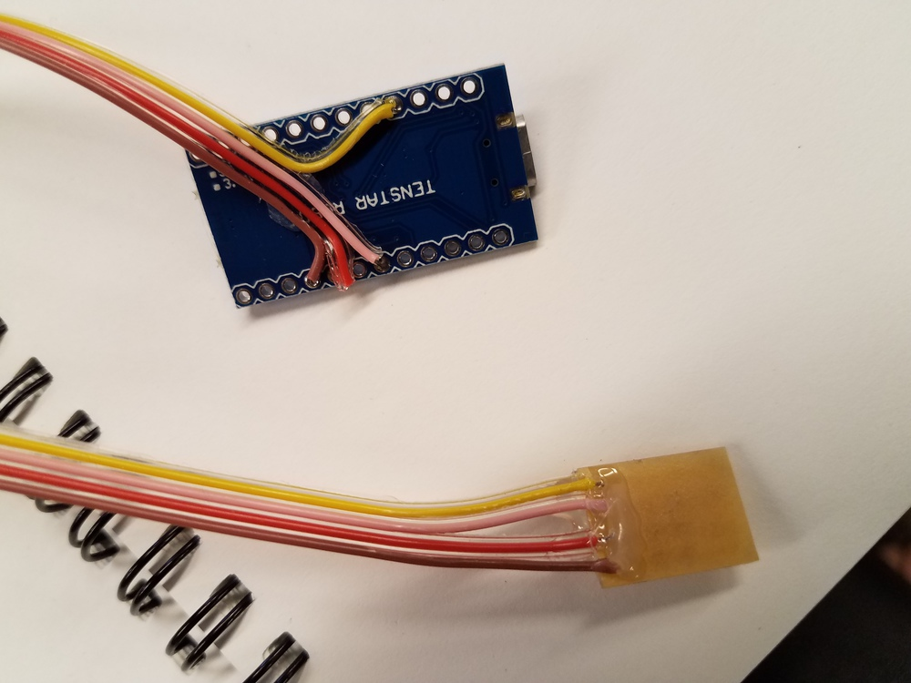
[Files](./Electronics_examples/Haystack_RGB/one_RGB_resistors) here for this board.
Below is a board with two (common anode) RGB LEDs. LED cathodes attached to the six PWM pins of the ATMega micro.
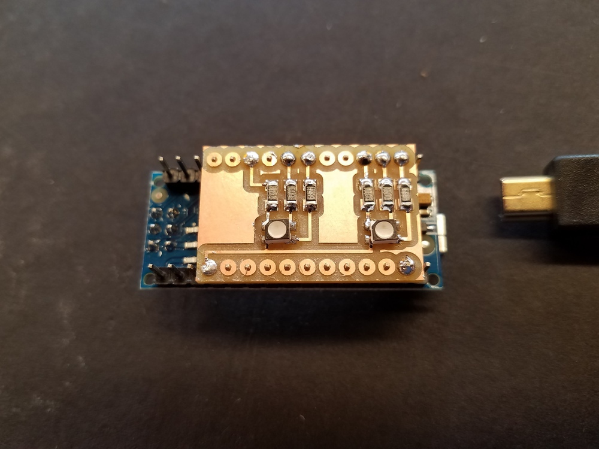
[Files](./Electronics_examples/Haystack_RGB/two_RGB_resistors) here for this board.
[Here's a movie. ](./Electronics_examples/Haystack_RGB/two_RGB_resistors/2xRGB_random.mp4)
###LED circuit on vinyl-cut copper foil
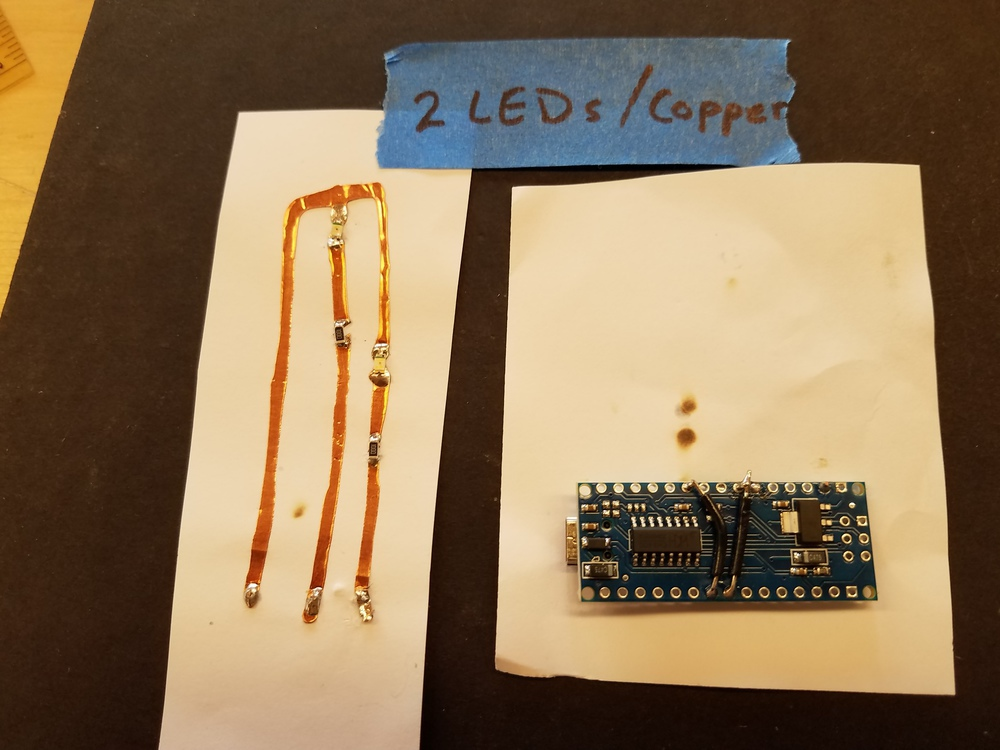
[Files](./Electronics_examples/LEDs_on_copper) here.
## Collaborations with studio participants.
- Vanna's Pot
- pictures.
- link to movie.
- smallified movie.
- Clay paddle
- Dye stamp
- embroidery
- Chessboard
- hammer stamp
## Other stuff.
- Coat Hooks
-